Ocho imágenes de fuentes oficiales, con su tipo de evidencia, y cuatro familias originales propuestas para las capacidades nuevas. Las referencias de otros bots no se publican como recursos OBEY. Esta galería es un documento de investigación; no una captura del bot renovado.
Quark · VIS-01
captura publicada de Discord
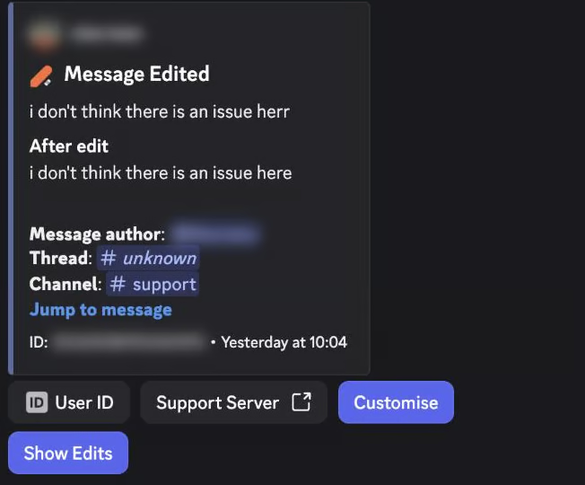
Antes/después, contexto del mensaje y acciones de consulta.
El servidor ejecutor y la versión desplegada no fueron inspeccionados.
Fuente oficialQuark · VIS-02
captura publicada de Discord
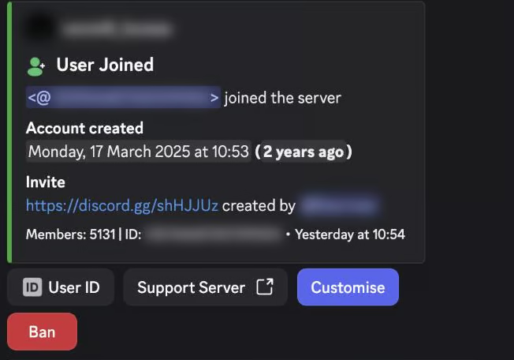
Título breve, datos de cuenta y origen de entrada.
Una comparación de usos de invitaciones no garantiza atribución individual; OBEY debe admitir desconocido.
Fuente oficialQuark · VIS-03
captura publicada de Discord
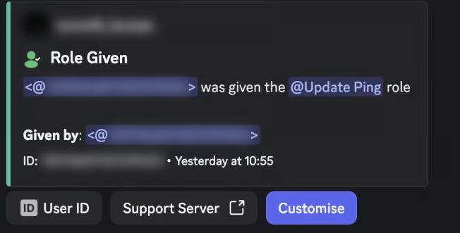
Acción, rol y actor en una jerarquía compacta.
El actor requiere correlación fiable; no se deduce solo por cercanía temporal.
Fuente oficialTicket Tool · VIS-04
captura publicada de canales de Discord
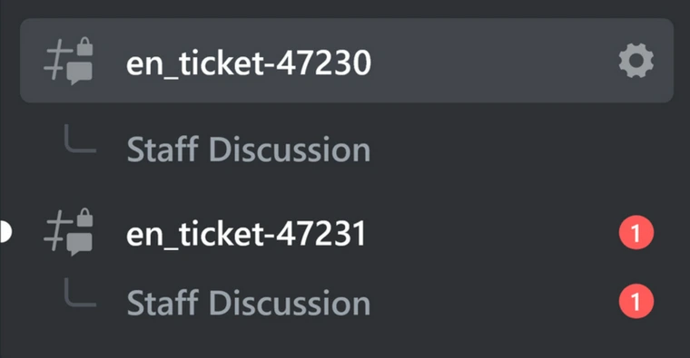
Hilos del equipo bajo canales de tickets.
La imagen muestra organización de canales; no el mensaje completo ni un cierre probado.
Fuente oficialArcane · VIS-05
imagen de tarjeta de rango
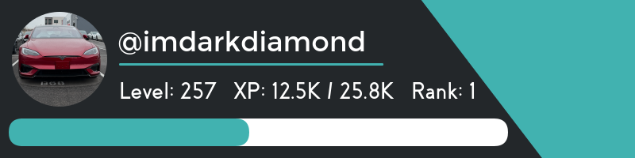
Avatar, nivel, XP, puesto y barra con jerarquía legible.
La barra representa XP, no progreso de reproducción.
Fuente oficialArcane · VIS-06
captura de ajustes web
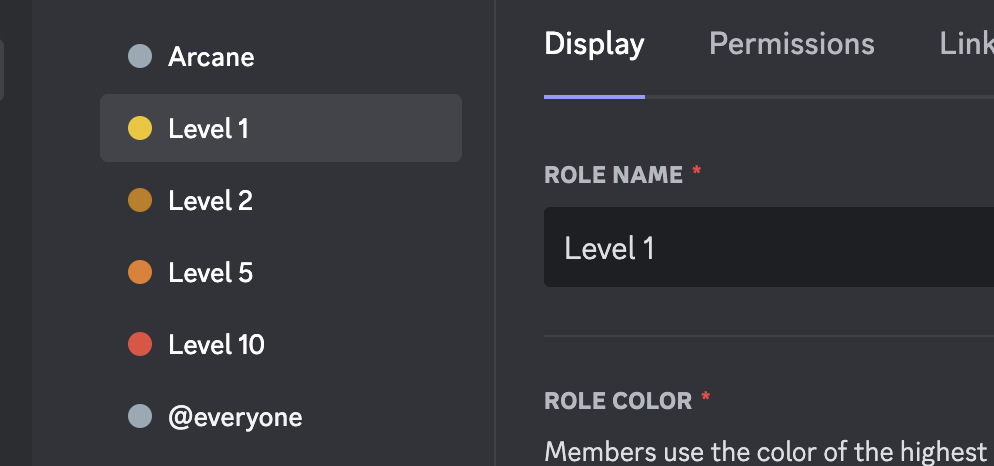
Configuración de recompensas separada de la tarjeta pública.
No es una interfaz de Discord.
Fuente oficialYAGPDB · VIS-07
ilustración oficial del cliente
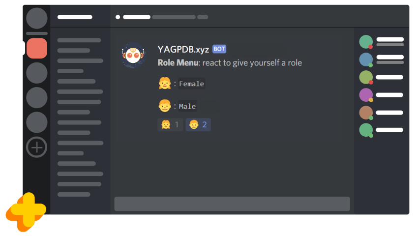
Relación visible entre opciones y reacciones.
Ilustración, no captura de producción actual; no copiar sus opciones demográficas.
Fuente oficialYAGPDB · VIS-08
ilustración oficial del cliente
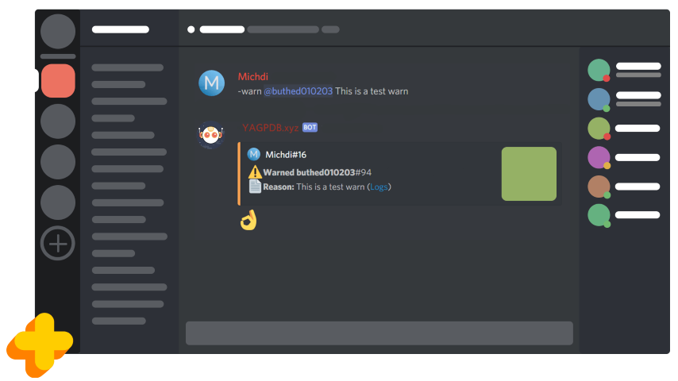
Autor, objetivo y motivo con acento visual.
Ilustración; prefijos y componentes pueden corresponder a una interfaz antigua.
Fuente oficialOBEY · NX01 Voto
Propuesta original, pendiente de aprobación
Una papeleta entrando en una urna; nunca una estrella de soporte.
Solo confirmar después de persistir el voto válido.
OBEY · NX02 Suscripción
Propuesta original, pendiente de aprobación
Recibo con un pequeño calendario; no identifica una plataforma.
El recurso no prueba un pago ni sustituye estado y fecha.
OBEY · NX03 Acceso habilitado
Propuesta original, pendiente de aprobación
Llave reconocible con etiqueta de comprobación.
Usar solo con entitlement efectivo; no significa rol de administrador.
OBEY · NX04 Traspaso de sesión
Propuesta original, pendiente de aprobación
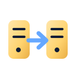
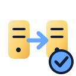
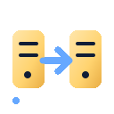
Dos servidores unidos por una flecha de dirección.
Solo en diagnóstico del equipo; no llenar la UI del usuario de infraestructura.
Las animaciones pueden ocultarse según la preferencia de movimiento reducido. Los controles y mensajes del bot siguen pendientes de implementación y prueba.